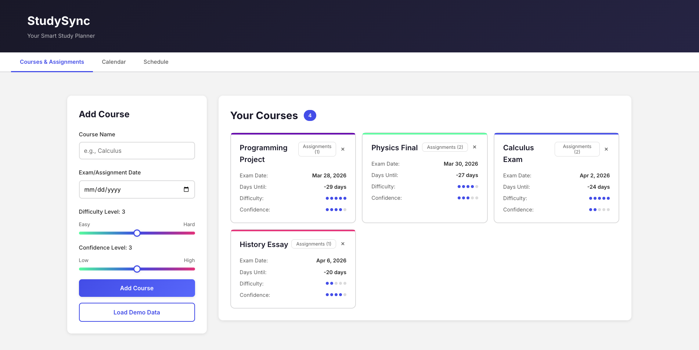

Overview
StudySync is a full-stack web app built to solve a real problem: students spending their limited study time on the wrong things. Instead of manually deciding what to study, the user inputs their courses (with difficulty and confidence ratings), upcoming exam and assignment dates, and how many hours they have per day. The app generates a day-by-day schedule that mathematically prioritizes higher-difficulty, lower-confidence, and closer-deadline work.
The project demonstrates the full web development stack in a clean, focused form: a REST API backend handling CRUD and schedule generation, a relational database layer, and a single-page frontend that consumes the API without any framework.
Problem
Students spread study time evenly across all subjects regardless of difficulty, confidence, or deadline, leading to poor performance on high-stakes exams.
Solution
A priority algorithm that weights study time allocation by difficulty, confidence level, and days until exam. Daily blocks are generated and visualized automatically.
My Role
Sole developer. Designed and implemented the backend, database schema, scheduling algorithm, REST API, and entire frontend from scratch.
Tech Stack
What I Built
- REST API (Flask): 9 endpoints handling course and assignment CRUD, schedule generation, and demo data loading. Each endpoint returns JSON consumed by the frontend without page reloads.
- Priority scheduling algorithm: custom formula:
priority = difficulty × (6 − confidence) / days_until_exam. Scores are normalized to percentages and available daily hours are allocated proportionally, rounded to 0.5-hour blocks with a minimum of 0.5 hours per active course. - SQLite database: two-table schema (
coursesandassignments) with auto-creation on first run. The backend exposes clean data access functions used by all route handlers. - Calendar view: month-by-month visual calendar built in vanilla JavaScript, rendering all assignments and exam dates as color-coded chips per course. Navigable by month without a page reload.
- Schedule view: day-by-day study plan rendered as color-coded time blocks per course. The user sets available hours per day, clicks Generate, and the full plan appears immediately.
- Demo mode: one-click load of 4 sample courses with varied difficulty, confidence, and deadlines; demonstrates the algorithm's differentiated allocation in a presentation context.
- Responsive design: mobile-first layout with breakpoints at 768px and 1024px; works on both desktop and phone without separate views.
- Test suite: pytest tests covering assignment CRUD operations and schedule generation edge cases.
Scheduling Algorithm
How the priority formula translates into a daily schedule:
priority = difficulty × (6 − confidence) / days_until_examHigher difficulty → more time needed.
Lower confidence → more time needed.
Closer deadline → higher urgency.
Scores are recalculated each day as deadlines approach, so the schedule automatically reweights itself as exams get closer.
Architecture
Three-tier web architecture with clear separation between data, logic, and presentation:
Challenges & What I Learned
- Algorithm edge cases. The priority formula produces division-by-zero when an exam is today (0 days remaining). Handling that case, and deciding the correct behavior (maximum priority, not a crash), required thinking carefully about the algorithm's intent, not just its formula.
- No framework discipline. Writing the frontend in vanilla JS without React or Vue meant explicitly managing state, DOM updates, and event listeners. This made the data flow more visible and helped me understand what frameworks are actually abstracting.
- REST API design before implementation. Designing all 9 endpoints before writing any handler code meant the frontend and backend could be developed against a stable contract. When the shape of a response needed to change, the impact was contained.
- Database schema first. Defining the SQLite schema before writing route handlers forced clarity about what data the algorithm actually needed. A schema change late in development is expensive; getting it right early saved significant rework.